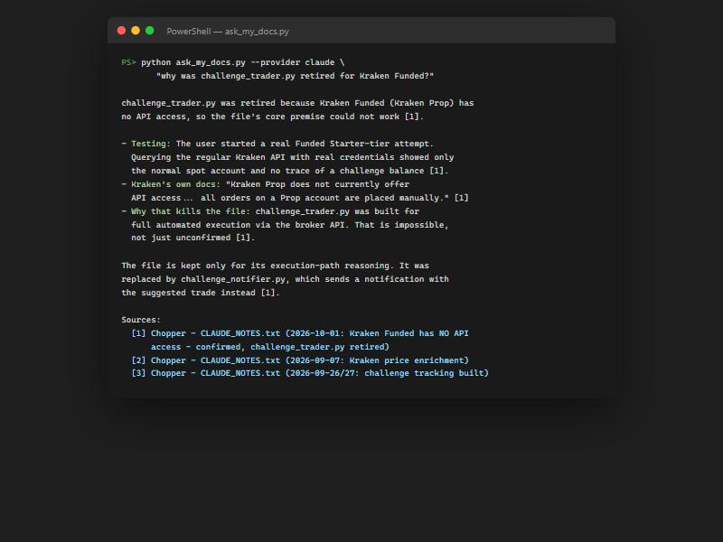
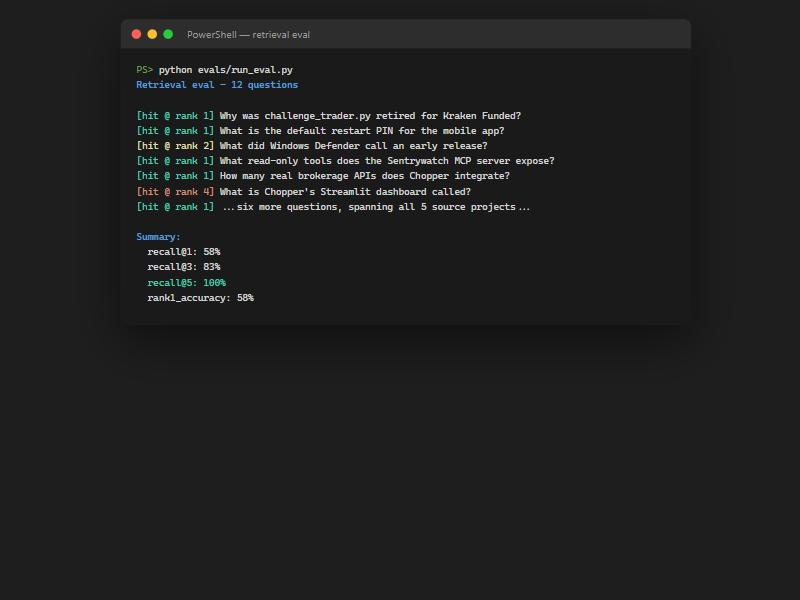

Case Study
A hybrid-retrieval RAG assistant that answers questions across every real project's own documentation — not one curated document set, but several thousand words each, in different authors' writing styles, one of them a dated incident log rather than prose.
Points retrieval at something genuinely multi-source: Sentrywatch's docs, a 52,000-word dated engineering log, and two mobile apps' READMEs — the actual shape "RAG over real documentation" takes, not a toy single-file demo that barely needs retrieval at all.
Hybrid retrieval: local ONNX embeddings (no torch, no API key, no cost) combined with BM25 keyword search over the same corpus, merged by reciprocal rank fusion — embeddings alone miss exact terms a proper noun or config key needs, BM25 alone misses paraphrases.
Structure-aware chunking for two genuinely different document shapes in the same pipeline: heading-based splitting for markdown, and a custom section splitter for a 52,000-word dated engineering log whose only structure is === date: title === delimiters — not every source in a real corpus is prose with headings.
The same dual-provider generation path as the AI incident copilot built alongside this — Ollama by default, the real Claude API via a flag — with every answer required to cite which retrieved excerpt backs each claim, and say so plainly when the excerpts don't contain the answer.
A real retrieval-quality eval — 12 questions spanning all five source projects, each with a verified ground-truth source file — reporting recall@k and rank-1 accuracy rather than a single pass/fail number: 100% recall@5, 83% recall@3, 58% rank-1. The hybrid search always finds the right document in the top 5; it doesn't always rank it first, and the eval says so instead of hiding it behind one aggregate score.
Tested live against the real Claude API, not just mocked — three real questions, one per source project, every answer correct and properly cited, including one that correctly left irrelevant retrieved chunks out of its citations rather than forcing them in.

